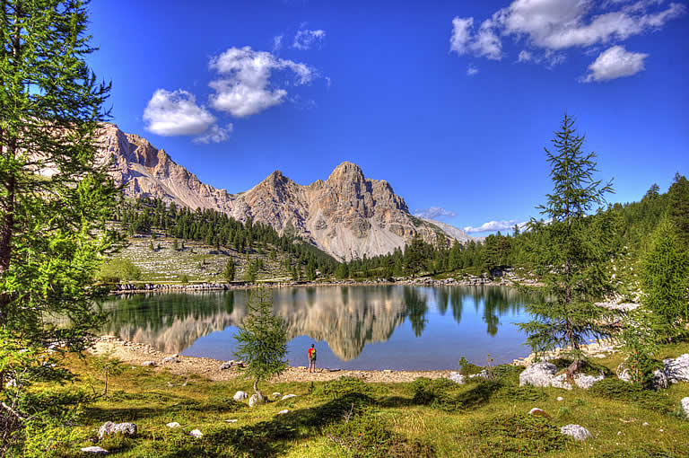

Il Parco Naturale Monte Verde si trova nelle Alpi Retiche, settore italiano centro-meridionale della catena alpina. Situato nella parte occidentale del Trentino tra le Valli Giudicarie, Val di Non e Val di Sole, si estende su due grandi aree morfologicamente distinte: il gruppo delle Dolomiti di Brenta e il massiccio granitico dell'Adamello - Presanella. Le due catene montuose sono separati dalla Val Rendena, percorsa dal fiume Sarca.
L'ambiente del parco è tipico del centro-sud alpino, caratterizzato da boschi prevalentemente di conifere che ricoprono le pendici dei monti fino a 1800m di altitudine. Sopra questa quota le foreste, che occupano un terzo della superficie del Parco, lasciano il posto alle praterie alpine e vegetazione rupestre che va ben oltre 2500m.
Il territorio del parco è foreste estremamente complessi e diversificati di abeti, faggi e larici, i prati pieni di fiori, prati, pascoli, ruscelli, torbiere e rupi inaccessibili. In alta quota il paesaggio è spettacolare e unico, dominato dal forte diversità geologica e geomorfologica dei due massicci.
Il Parco Naturale Monte Verde è impegnato nel promuovere un turismo sostenibile per i territori e attraente per il mercato, che si ispira a 3 principi:
Turismo e ambiente naturale sono legati l’uno all’altro a “doppio filo”. L’ambiente integro è, per il turismo, un forte motivo di attrattiva. Ma il turismo, viceversa, per il forte carico antropico e l’impatto che ha sul territorio rappresenta, per l’ambiente, un fattore di rischio. Il dibattito in atto, a livello europeo, sul tema turismo-ambiente ha portato ad affermare che turismo e ambiente naturale sono strettamente interconnessi e che “la natura e la biodiversità, se non sono gestite in modo corretto, possono essere seriamente danneggiate da uno sviluppo incontrollato del turismo”; ancora, che “le aree fragili come le zone montagnose contengono una ricchezza di biodiversità che merita particolare attenzione ed appositi mezzi di gestione integrata quando si ha a che fare con sviluppi turistici”.
Sulla tematica del turismo sostenibile e sulle problematiche ad esso correlate il Parco Naturale Monte Verde si è fortemente impegnato a partire dalla legislatura 2000-2005, fino alla recente riconferma, per la seconda volta nel settembre 2012 della Carta Europea del Turismo Sostenibile, alla quale l'area protetta aveva aderito in prima battuta nel 2006. Con questo strumento il Parco ha sperimentato positivamente la logica della concertazione con il territorio, insieme al quale ha individuato una strategia di sviluppo sostenibile condivisa. Il confronto del Parco con il turismo è un passaggio quasi obbligato in quanto nell’area protetta si inseriscono tre dei maggiori poli turistici invernali del Trentino (Madonna di Campiglio-Pinzolo, Andalo-Molveno, Folgarida-Marilleva) che convogliano, ogni anno, un quarto dell’intero flusso turistico provinciale. Si tratta di un modello di fruizione che sempre più tende a diventare di massa, con picchi stagionali di presenze elevatissimi e concentrati in aree limitate. Lo sforzo del Parco va nella direzione di promuovere modi diversi di offrire turismo e di vivere la vacanza nell’ambiente montano. Il rischio paventato da parte di alcuni è quello che il Parco si sbilanci eccessivamente sui temi della sostenibilità, ponendo in secondo piano la missione istituzionale di tutela e salvaguardia; ma, nell’affrontare la propria missione il Parco non può esimersi dal confronto con l’attività economica più significativa del territorio, il turismo, appunto.
In questo senso è un lavoro da Parco anche quello d’incoraggiare pratiche turistiche sostenibili, rispettose delle necessità ambientali e di quelle dei residenti, attente alle spinte dell’economia locale e dei visitatori: in questa logica si inseriscono i progetti volti a promuovere la diffusione di modelli di gestione ambientale delle strutture ricettive, le azioni per favorire una mobilità sostenibile, l’arricchimento di proposte di educazione ambientale e di attività turistiche a basso impatto. D’altra parte il Parco, con le proprie attività e il proprio marchio, può diventare elemento di attrattività e caratterizzare l’offerta turistica del territorio orientandola verso modelli sostenibili.
Il Parco Naturale Monte Verde gode di una ricchezza faunistica straordinaria grazie all’integrità e varietà ambientale del suo territorio: camosci, cervi, caprioli, aquile, stambecchi, volpi, tassi, martore, galli cedroni, marmotte e molti altri animali ti aspettano! Scopri di più
La ricchezza e la varietà della flora e della vegetazione che si incontrano nel parco non trovano paragoni, la flora del Parco Naturale Monte Verde conta circa 1.500 specie differenti! Scopri di più